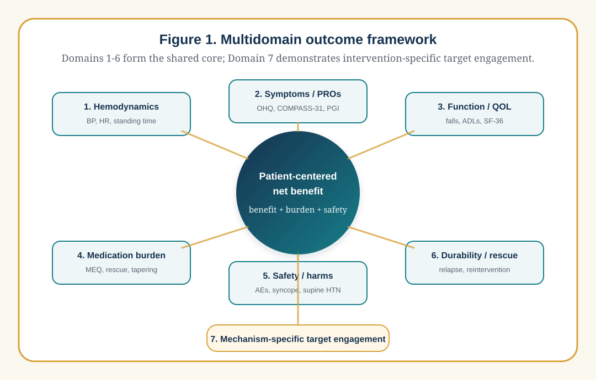

Reporting Outcomes in Orthostatic Hypotension and Orthostatic Intolerance Intervention Trials: A Multidomain Framework Incorporating Medication Burden
A multidomain framework for orthostatic hypotension and orthostatic intolerance intervention trials, incorporating medication burden and Midodrine Equivalents.
Draft manuscript
Author(s): Karthikeyan M. Arcot, MD; Julia Lin; Sophia DeRosa; Jeremy Liff; Vincent DeOrchis; Chander Sadasivan; additional authors to be confirmed Article type: Methods / perspective / consensus framework proposal Keywords: orthostatic hypotension; orthostatic intolerance; intervention trials; outcome reporting; medication burden; Midodrine Equivalents; OHQ; autonomic disorders; venous outflow obstruction; patient-reported outcomes
Abstract
Background: Orthostatic hypotension (OH) and orthostatic intolerance (OI) intervention trials often report heterogeneous outcomes, including orthostatic blood pressure change, symptoms, quality of life, medication changes, falls, syncope, procedural or drug safety, and intervention-specific physiologic measures. This heterogeneity limits comparison across studies and may obscure clinically meaningful responses. In particular, medication reduction is frequently reported narratively despite being highly relevant to patients treated with pressor, volume-expanding, autonomic, or heart-rate-modifying drugs.
Objective: To propose a practical outcome-reporting framework for OH and OI intervention trials that combines objective physiology, patient-reported symptoms, function, medication burden, safety, durability, and intervention-specific mechanistic endpoints.
Framework: We propose seven core reporting domains: (1) orthostatic hemodynamics; (2) symptoms and patient-reported outcomes; (3) function and quality of life; (4) medication burden; (5) safety and harms; (6) durability and rescue therapy; and (7) mechanism-specific endpoints. For OH trials, medication burden can be standardized with Midodrine Equivalents (MEQ), in which each common OH-directed medication's usual maximum daily dose is assigned 100 MEQ. For broader OI trials, medication-burden reporting should be class-specific when MEQ is not applicable.
Application: The STANDUP supracardiac venous intervention program illustrates why multidomain reporting is needed. Source STANDUP materials include orthostatic systolic blood pressure (SBP) drop, symptom/global improvement, angiographic time-density curve metrics, adverse events, and MEQ medication reduction. These domains capture different aspects of response and should be interpreted together rather than collapsed into a single unvalidated endpoint.
Conclusions: OH and OI intervention trials should report a minimum multidomain outcome set that distinguishes hemodynamic improvement, symptom benefit, functional recovery, medication-sparing effects, and safety. MEQ offers a transparent medication-burden metric for OH pharmacotherapy, but it should accompany, not replace, blood pressure, symptoms, and safety outcomes. Prospective validation and stakeholder consensus are needed to refine thresholds and develop a formal core outcome set.
Key messages
What is already known
- OH is defined by a sustained orthostatic blood pressure fall, while OI is a broader syndrome of upright intolerance that can include OH, postural tachycardia syndrome, reflex syncope, delayed OH, and other overlapping phenotypes.
- Intervention studies in OH and OI use inconsistent endpoints, making results difficult to compare across therapies, mechanisms, and populations.
- Patient-reported outcomes and harms are often underreported in trials unless prespecified and analyzed using transparent methods.
What this paper adds
- A seven-domain outcome-reporting framework for OH/OI intervention trials.
- A structured approach to reporting medication burden, including MEQ for OH-directed pressor and volume-expanding medications.
- Practical recommendations for distinguishing physiologic response, symptomatic response, medication-sparing response, and unsafe or discordant response.
How this might affect research and practice
- Future OH/OI trials can use this framework to improve comparability, interpretability, and patient-centered relevance.
- The framework can support eventual development of a formal core outcome set using COMET-style stakeholder methods.
Introduction
Orthostatic disorders are common, disabling, and mechanistically heterogeneous. OH is defined by consensus as a sustained reduction in systolic blood pressure of at least 20 mmHg or diastolic blood pressure of at least 10 mmHg within 3 minutes of standing or head-up tilt 1,2. OH is common in older adults and has been associated with cardiovascular morbidity and mortality 3,4. OI is broader: it refers to symptoms provoked by upright posture and relieved by recumbency, including dizziness, presyncope, syncope, fatigue, visual disturbance, cognitive difficulty, weakness, palpitations, headache, and exercise intolerance. OI may occur with OH, delayed OH, reflex syncope, postural tachycardia syndrome, low-flow states, medication effects, autonomic neuropathy, deconditioning, venous pooling, or structural vascular disorders.
This heterogeneity creates a major outcome-reporting problem. Trials may report improvement in orthostatic SBP drop, standing time, tilt-table response, symptom scores, syncope frequency, falls, quality of life, patient global impression, medication dose, adverse events, or a procedure-specific physiologic marker. These outcomes are all potentially valid, but they answer different questions. A trial that improves a physiologic endpoint but worsens symptoms has a different clinical meaning than a trial that improves symptoms while reducing medication burden. Likewise, an intervention that reduces symptoms by escalating pressor therapy should not be interpreted the same way as one that reduces symptoms while allowing medication de-escalation.
General trial-reporting guidance emphasizes transparent prespecification of outcomes, statistical methods, patient-reported outcomes, and harms 5,6,7. Core outcome set methodology further emphasizes the need for standardized minimum outcomes that should be reported across trials in a clinical area 8. OH and OI research would benefit from a similar approach.
This paper proposes a practical multidomain outcome-reporting framework for OH and OI intervention trials. The framework is designed for pharmacologic, device, procedural, behavioral, rehabilitation, compression, volume-expansion, and mechanism-based interventions. It also incorporates Midodrine Equivalents (MEQ), a medication-burden metric developed in the STANDUP program, as an example of how medication-sparing effects can be quantified in OH trials.
Why single-domain outcomes are insufficient
Orthostatic blood pressure is necessary but incomplete
Orthostatic BP change is central to OH diagnosis and should be reported in OH trials. However, it does not fully capture OI. Some patients experience severe symptoms with modest cuff BP changes, while others meet OH criteria but report limited functional impairment. Peripheral arm-cuff BP may not fully reflect cerebral perfusion, venous return, autonomic reserve, vestibulo-sympathetic compensation, or regional vascular dynamics. BP also depends on measurement conditions, medication timing, hydration, meals, ambient temperature, compression garments, and standing duration.
Symptoms are necessary but can be nonspecific
Symptoms are the reason patients seek care, but OI symptoms overlap with vestibular disease, arrhythmia, anxiety, anemia, medication adverse effects, migraine, neuropathy, deconditioning, and sleep disorders. Patient-reported instruments should therefore specify recall period, posture relationship, missing-data handling, and whether symptoms are attributed to low blood pressure, tachycardia, presyncope, or broader upright intolerance.
Medication burden is clinically meaningful
For many patients, treatment success is not simply a smaller SBP drop. It is fewer daily doses, less supine hypertension, fewer adverse effects, lower cost, less rescue therapy, or complete medication independence. This is particularly important because pharmacologic OH therapy often requires individualized use of pressor, volume-expanding, or adjunctive autonomic agents with different evidence levels and adverse-effect profiles 9,10. Medication burden is often described in prose, such as "midodrine was reduced" or "droxidopa was discontinued." This prevents pooled analysis and obscures partial dose reductions across multiple agents.
Harms define net benefit
OH and OI interventions can cause serious harms: supine hypertension, falls from undertreatment, bradycardia, tachyarrhythmias, urinary retention, edema, electrolyte abnormalities, thrombosis, bleeding, device migration, access-site complications, radiation exposure, contrast nephropathy, and neurologic injury. Safety reporting must be systematic and should not be limited to events judged related to the intervention.
Proposed minimum reporting domains
We propose that OH/OI intervention trials report seven domains as a minimum. Domains 1-6 should be treated as the core outcome-reporting set for most trials, while Domain 7 is an intervention-specific target-engagement set that varies by mechanism. This distinction is important: a venous intervention trial may report time-density curve metrics or pressure gradients, while a drug, compression, or rehabilitation trial should report the mechanistic endpoint that matches its own intervention.

| Domain | Core question | Example measures |
|---|---|---|
| 1. Orthostatic hemodynamics | Did upright cardiovascular physiology improve? | Supine/seated/standing BP and HR; SBP drop; DBP drop; HR increment; standing duration; tilt-table metrics; ambulatory BP |
| 2. Symptoms and patient-reported outcomes | Did the patient feel better in upright life? | OHQ/OHSA/OHDAS; COMPASS-31; presyncope score; syncope diary; patient global impression |
| 3. Function and quality of life | Did daily activities improve? | Standing time; walking tolerance; falls; ADLs; SF-36 or EQ-5D; work/activity limitation |
| 4. Medication burden | Was benefit achieved with less treatment load? | MEQ for OH drugs; number of agents; dosing frequency; rescue use; medication independence |
| 5. Safety and harms | Was improvement achieved safely? | Adverse events; serious adverse events; supine hypertension; falls; thrombosis; bleeding; device/procedure events |
| 6. Durability and rescue therapy | Was benefit sustained? | Time to relapse; retreatment; dose re-escalation; hospitalization; stent patency or drug persistence |
| 7. Mechanism-specific endpoints | Did the intervention affect its target? | Venous TDC metrics; pressure gradients; autonomic reflex testing; plasma norepinephrine; compression adherence; device performance |
Domain 1: Orthostatic hemodynamics
Trials should report standardized orthostatic vital signs even when symptoms are the primary endpoint. At minimum, report:
- posture sequence: supine-to-standing, seated-to-standing, tilt-table, or active stand;
- rest period before baseline measurement;
- BP and HR timing, including 1 minute, 3 minutes, and extended measurements if delayed OH is relevant;
- standing duration and reason for early termination;
- device used and arm position;
- medication timing relative to testing;
- meal, hydration, compression garment, and time-of-day conditions;
- presence of supine hypertension.
For OH trials, the key physiologic endpoint is usually change in orthostatic SBP drop. For broader OI trials, HR increment, standing duration, symptom reproduction, and recovery time may be equally or more relevant. Continuous change should be reported even when dichotomous responder definitions are used.
Domain 2: Symptoms and patient-reported outcomes
Patient-reported outcomes should follow CONSORT-PRO principles when used in trials: identify whether the PRO is primary or secondary, state the hypothesis and domains, cite validation evidence, specify missing-data methods, and discuss PRO-specific limitations 6.
For OH, the Orthostatic Hypotension Questionnaire (OHQ) is a validated instrument with symptom and activity components 11. The OHQ is particularly useful when low blood pressure symptoms are distinguishable from other causes. For broader autonomic symptom burden, COMPASS-31 can provide a concise autonomic symptom profile 12. For trials enrolling mixed OI phenotypes, investigators should state why the selected instrument fits the enrolled population.
Recommended symptom reporting:
- baseline score and follow-up score;
- absolute change and percent change;
- proportion meeting a prespecified responder threshold;
- item-level reporting for dizziness/lightheadedness, syncope/presyncope, fatigue, cognitive difficulty, visual symptoms, and head/neck discomfort when relevant;
- recall period;
- missing-data method;
- relationship between symptom change and hemodynamic change.
Domain 3: Function and quality of life
Function is often more meaningful than a physiologic threshold. Trials should report outcomes that reflect upright life:
- maximum standing time or standardized standing tolerance;
- walking tolerance;
- falls and near-falls;
- syncope and near-syncope frequency;
- activity limitation;
- work or caregiving impairment;
- validated quality-of-life measures such as SF-36 or EQ-5D when feasible.
Falls and syncope should be reported as both counts and participant-level proportions, with exposure time. A patient who has fewer symptoms but more falls has not had an uncomplicated benefit.
Domain 4: Medication burden
Medication burden should be reported in all intervention trials where medication changes are expected, allowed, or clinically important. Report:
- medication name, dose, frequency, route, and timing;
- baseline regimen and follow-up regimen;
- rescue medication use;
- taper attempts and failed tapers;
- reasons for medication changes;
- adverse effects driving medication changes;
- whether medication changes were protocolized, clinician-directed, or patient-directed.
Midodrine Equivalents for OH medication burden
For OH-directed vasoactive therapy, MEQ provides a standardized dose-intensity index. This is the most immediately operationalizable medication-burden metric in the framework and should be reported alongside, not instead of, symptoms, hemodynamics, and safety. In the STANDUP source materials, each medication's usual maximum daily dose is assigned 100 MEQ, and lower doses are scaled proportionally:
| Medication | Usual maximum daily dose | Main-text scale | Spreadsheet formula |
|---|---|---|---|
| Midodrine | 30 mg/day | 3.33 MEQ/mg | daily mg x 3.33 |
| Droxidopa | 1800 mg/day | 0.06 MEQ/mg | daily mg x 0.06 |
| Fludrocortisone | 0.3 mg/day | 333.33 MEQ/mg | daily mg x 333.33 |
| Pyridostigmine | 180 mg/day | 0.56 MEQ/mg | daily mg x 0.56 |
Total MEQ is the sum of medication-specific MEQ values. Rounded values are sufficient for manuscript presentation; spreadsheet implementations can retain full precision as specified in the supplement. MEQ measures intensity of therapy rather than physiologic potency. It assumes dose proportionality and equal maximum-dose weighting across drugs, but midodrine, droxidopa, fludrocortisone, and pyridostigmine differ in onset, duration, mechanism, adverse-effect profile, cost, and patient-specific response. MEQ should therefore be presented as a medication-burden index and validated against patient-centered outcomes, safety, cost, and drug-class-specific adverse effects.
Medication-burden endpoints
Recommended endpoints include:
- absolute MEQ change;
- percent MEQ change;
- at least 50% MEQ reduction;
- medication independence, defined as MEQ = 0;
- number of medications discontinued;
- reduced daily dosing frequency;
- failed taper due to recurrent symptoms or hemodynamic worsening.
For OI interventions where MEQ does not apply, report medication classes separately. Examples include beta blockers, ivabradine, stimulants, volume expanders, vasoconstrictors, salt tablets, desmopressin, antihistamines, migraine therapies, and agents used for comorbid disorders. Avoid collapsing dissimilar OI medications into a single unvalidated score unless the score is prespecified and justified.
Domain 5: Safety and harms
Safety reporting should follow harms-reporting principles: define the collection period, event ascertainment method, severity grading, seriousness, relatedness, withdrawals due to adverse events, and denominators 7. Report both intervention-related and all-cause adverse events.
OH/OI-specific harms include:
- supine hypertension;
- severe standing hypotension after medication taper;
- syncope, near-syncope, falls, and injury;
- bradycardia, tachyarrhythmia, palpitations;
- urinary retention;
- edema, hypokalemia, metabolic alkalosis, heart failure exacerbation;
- headache, nausea, fatigue, paresthesia;
- thrombosis, bleeding, access-site complications, neurologic injury, device migration, restenosis, or reintervention for procedural/device trials.
Medication reduction should be interpreted as favorable only when not accompanied by increased syncope, falls, severe hypotension, or rescue therapy.
Domain 6: Durability and rescue therapy
Orthostatic disorders fluctuate. Short-term response may not predict durable benefit. Trials should report:
- timing of each follow-up visit;
- primary endpoint time point;
- time to loss of response;
- medication re-escalation;
- rescue therapy;
- hospitalization or urgent care;
- repeat procedure or device revision;
- adherence to ongoing non-pharmacologic therapy;
- durability of medication independence.
For procedural trials, patency, restenosis, thrombosis, reintervention, and imaging follow-up should be reported at prespecified intervals.
Domain 7: Mechanism-specific endpoints
Mechanism-specific endpoints are essential for understanding whether an intervention engaged its target. They should not replace patient-centered outcomes. Domains 1-6 are the shared core reporting set; Domain 7 is deliberately intervention-specific. It functions as the bridge between innovation and established clinical metrics: it shows whether a new drug, device, procedure, compression strategy, rehabilitation protocol, or venous intervention actually changed the mechanism it was designed to change.
Examples:
- venous intervention: venous pressure gradients, IVUS area, contrast clearance, TDC time-to-peak, mean transit time, exponential decay constant, collateral reflux, patency;
- autonomic pharmacology: standing norepinephrine, Valsalva response, baroreflex sensitivity, autonomic reflex screen;
- compression or volume expansion: adherence, plasma volume estimates, sodium intake, urine sodium, compression pressure;
- rehabilitation: conditioning dose, orthostatic training adherence, exercise capacity;
- POTS/OI heart-rate interventions: HR increment, symptom-HR relationship, arrhythmia monitoring.
Mechanistic endpoints should be prespecified, reproducible, and linked to a plausible causal pathway.
Interpreting multidomain responses
We recommend reporting response patterns rather than relying on a single composite endpoint.
| Response pattern | Definition | Interpretation |
|---|---|---|
| Hemodynamic response | Improved orthostatic BP/HR without symptom or medication improvement | Physiologic signal; clinical relevance uncertain |
| Symptom response | Improved PRO/global impression without objective change | Patient benefit; assess placebo effects, measurement limits, and alternative mechanisms |
| Medication-sparing response | Stable or improved hemodynamics and symptoms with reduced medication burden | Clinically meaningful reduction in treatment load |
| Complete multidomain response | Improved hemodynamics, improved symptoms/function, reduced medication burden, and no safety deterioration | Strongest evidence of net benefit |
| Unsafe response | Apparent improvement accompanied by more falls, syncope, severe hypertension, or serious adverse events | Net benefit questionable |
| Discordant response | One domain improves while another worsens | Requires transparent reporting and mechanistic interpretation |
Composite endpoints should be used cautiously unless each component is clinically meaningful, similarly important, and reported separately. Discordance should be described rather than hidden. For example, a patient's standing SBP drop may improve after an intervention while symptoms worsen because of supine hypertension, headache, urinary retention, or other treatment-related adverse effects. Conversely, symptoms may improve without a large cuff-BP change if cerebral perfusion, standing duration, medication burden, or rescue-therapy use improves.
Application to supracardiac venous intervention trials
The STANDUP program illustrates the need for multidomain reporting. Supracardiac venous outflow disorders and supracardiac venous interventions are emerging areas with heterogeneous indications and outcome measures 13,14,15. Source STANDUP materials evaluate supracardiac venous angioplasty and/or stenting for refractory OH/OI using multiple domains:
- orthostatic SBP drop;
- symptom or global clinical improvement;
- MEQ medication reduction;
- angiographic TDC parameters;
- venography and IVUS findings;
- right heart catheterization measures in STANDUP 2;
- adverse events, thrombosis, neurologic complications, and device outcomes;
- OHQ and quality-of-life follow-up in the protocol.
This structure is preferable to reporting only a BP endpoint or only a symptom endpoint. It allows investigators to identify patients who improve hemodynamically but not symptomatically, patients who feel better without a large cuff-BP change, and patients who maintain benefit while reducing medication burden. The STANDUP source cohort can be presented as an illustrative application of the proposed framework, while causal claims should remain limited by its single-arm design.
Recommendations for future OH/OI trial reports
- Define the phenotype. State whether participants have OH, delayed OH, neurogenic OH, non-neurogenic OH, POTS, reflex syncope, mixed OI, venous outflow obstruction, or another phenotype.
- Prespecify primary and secondary domains. Do not change the interpretation of the trial based on whichever domain improves most.
- Report measurement conditions. Orthostatic physiology is sensitive to meals, medications, hydration, compression, and time of day.
- Use validated PROs where possible. If using a new symptom instrument, provide justification and psychometric plan.
- Quantify medication burden. Use MEQ for OH-directed medication burden when appropriate; otherwise report class-specific dose changes.
- Report harms systematically. Include all-cause and related events, severity, withdrawals, and exposure time.
- Report durability. Include medication re-escalation, loss of response, retreatment, and long-term safety.
- Keep domains separate. If a composite endpoint is used, report each component.
- Plan for missing data. PROs, standing BP, and follow-up visits are vulnerable to informative missingness.
- Move toward consensus. Use stakeholder methods to develop a formal core outcome set for OH/OI intervention trials.
Limitations of this proposal
This framework is a practical proposal, not a completed consensus statement. It has not yet undergone Delphi voting, patient prioritization, regulatory review, or formal psychometric validation. MEQ is specific to OH-directed medications and should not be overextended to all OI therapies. MEQ also measures treatment intensity rather than physiologic potency: a single index cannot fully capture nonlinear dose-response, different mechanisms, or class-specific toxicities such as midodrine-related urinary retention, fludrocortisone-related edema or hypokalemia, droxidopa cost, or pyridostigmine gastrointestinal effects. Thresholds such as 50% MEQ reduction, 20% SBP-drop improvement, or 1-point OHQ improvement are useful candidate thresholds but require validation by phenotype and intervention type. Finally, some trials may reasonably prioritize a domain outside this minimum set, provided the rationale is prespecified and all core safety and interpretability domains are still reported.
Conclusion
OH and OI intervention trials require multidomain outcome reporting. Orthostatic hemodynamics, symptoms, function, medication burden, safety, durability, and mechanism-specific endpoints each capture different aspects of therapeutic response. MEQ provides a transparent method for quantifying OH medication burden and can reveal medication-sparing benefits that would otherwise be missed. A standardized reporting framework will improve comparability across interventions, support patient-centered interpretation, and provide the foundation for a formal OH/OI core outcome set.
Tables
Table 1. Minimum outcome-reporting set for OH/OI trials
| Domain | Reporting role | Notes |
|---|---|---|
| Orthostatic hemodynamics | Core domain | BP/HR protocol, timing, standing duration, medication timing |
| Symptoms/PROs | Core domain | Use OHQ, COMPASS-31, or phenotype-appropriate instruments |
| Function/QOL | Core domain | Standing/walking tolerance, falls, syncope, ADLs, QOL |
| Medication burden | Core when medication changes are allowed or expected | MEQ for OH drugs; class-specific reporting for broader OI |
| Safety/harms | Core domain | Include all-cause and related events |
| Durability/rescue | Core domain | Follow-up timing, relapse, rescue therapy, reintervention |
| Mechanistic endpoint | Intervention-specific domain | Demonstrates target engagement |
Table 2. MEQ conversion for OH medication burden
| Medication | Maximum daily dose | Main-text scale | Spreadsheet formula |
|---|---|---|---|
| Midodrine | 30 mg/day | 3.33 MEQ/mg | daily mg x 3.33 |
| Droxidopa | 1800 mg/day | 0.06 MEQ/mg | daily mg x 0.06 |
| Fludrocortisone | 0.3 mg/day | 333.33 MEQ/mg | daily mg x 333.33 |
| Pyridostigmine | 180 mg/day | 0.56 MEQ/mg | daily mg x 0.56 |
Full-precision conversion factors are provided in the MEQ supplement for spreadsheet or statistical implementation.
Table 3. Recommended reporting of medication changes
| Item | Required detail |
|---|---|
| Baseline regimen | Medication, dose, frequency, route, timing |
| Follow-up regimen | Same fields as baseline |
| Change method | Protocolized taper, clinician-directed change, or patient-directed change |
| Reason for change | Improvement, adverse effect, cost, supine hypertension, lack of efficacy, unrelated reason |
| Rescue therapy | Drug, dose, frequency, indication |
| Failed taper | Drug, dose attempted, reason for restarting |
| Medication-burden metric | MEQ or class-specific dose summary |
References
References are maintained in references/meq_orthostatic_hypotension.bib.
References
- Freeman R., Wieling W., Axelrod F., Benditt D., Benarroch E., Biaggioni I., et al. Consensus statement on the definition of orthostatic hypotension, neurally mediated syncope and the postural tachycardia syndrome. Clinical Autonomic Research. 2011;21(2):69-72. doi:10.1007/s10286-011-0119-5.
- Gibbons C., Schmidt P., Biaggioni I., Frazier-Mills C., Freeman R., Isaacson S., et al. The recommendations of a consensus panel for the screening, diagnosis, and treatment of neurogenic orthostatic hypotension and associated supine hypertension. Journal of Neurology. 2017;264(8):1567-1582. doi:10.1007/s00415-016-8375-x.
- Rutan G., Hermanson B., Bild D., Kittner S., LaBaw F., Tell G. Orthostatic hypotension in older adults. The Cardiovascular Health Study. Hypertension. 1992;19(6 Pt 1):508-519. doi:10.1161/01.HYP.19.6.508.
- Ricci F., Fedorowski A., Radico F., Romanello M., Tatasciore A., Di Nicola M., et al. Cardiovascular morbidity and mortality related to orthostatic hypotension: a meta-analysis of prospective observational studies. European Heart Journal. 2015;36(25):1609-1617. doi:10.1093/eurheartj/ehv093.
- Schulz K., Altman D., Moher D. CONSORT 2010 statement: updated guidelines for reporting parallel group randomised trials. BMJ. 2010;340:c332. doi:10.1136/bmj.c332.
- Calvert M., Blazeby J., Altman D., Revicki D., Moher D., Brundage M. Reporting of patient-reported outcomes in randomized trials: the CONSORT PRO extension. JAMA. 2013;309(8):814-822. doi:10.1001/jama.2013.879.
- Jun M., Li T., Hopewell S., Treadwell J., Chan A., Cuker A., et al. CONSORT Harms 2022 statement, explanation, and elaboration: updated guideline for the reporting of harms in randomised trials. BMJ. 2023;381:e073725. doi:10.1136/bmj-2022-073725.
- Williamson P., Altman D., Bagley H., Barnes K., Blazeby J., Brookes S., et al. The COMET Handbook: version 1.0. Trials. 2017;18(Suppl 3):280. doi:10.1186/s13063-017-1978-4.
- Fanciulli A., Wenning G. Evidence-based treatment of neurogenic orthostatic hypotension and related symptoms. Journal of Neural Transmission. 2017;124(12):1567-1605. doi:10.1007/s00702-017-1791-y.
- Kulkarni S., Jenkins D., Dhar A., Mir F. Treating Lows: Management of Orthostatic Hypotension. Journal of Cardiovascular Pharmacology. 2024;84(3):303-315. doi:10.1097/FJC.0000000000001597.
- Kaufmann H., Malamut R., Norcliffe-Kaufmann L., Rosa K., Freeman R. The Orthostatic Hypotension Questionnaire (OHQ): validation of a novel symptom assessment scale. Clinical Autonomic Research. 2012;22:79-90. doi:10.1007/s10286-011-0146-2.
- Sletten D., Suarez G., Low P., Mandrekar J., Singer W. COMPASS 31: a refined and abbreviated Composite Autonomic Symptom Score. Mayo Clinic Proceedings. 2012;87(12):1196-1201. doi:10.1016/j.mayocp.2012.10.013.
- Bai C., Chen Z., Ding Y., Ji X., Yuan J., Meng R. Long-term safety and efficacy of stenting on correcting internal jugular vein and cerebral venous sinus stenosis. Annals of Clinical and Translational Neurology. 2023;10(8):1305-1313. doi:10.1002/acn3.51822.
- Higgins N., Trivedi R., Greenwood R., Pickard J. Brain Slump Caused by Jugular Venous Stenoses Treated by Stenting: A Hypothesis to Link Spontaneous Intracranial Hypotension with Idiopathic Intracranial Hypertension. Journal of Neurological Surgery Reports. 2015;76(1):e188-e193. doi:10.1055/s-0035-1555015.
- Scerrati A., Norri N., Mongardi L., Dones F., Ricciardi L., Trevisi G., et al. Styloidogenic-cervical spondylotic internal jugular venous compression, a vascular disease related to several clinical neurological manifestations: diagnosis and treatment-a comprehensive literature review. Annals of Translational Medicine. 2021;9(8):718. doi:10.21037/atm-20-3023.